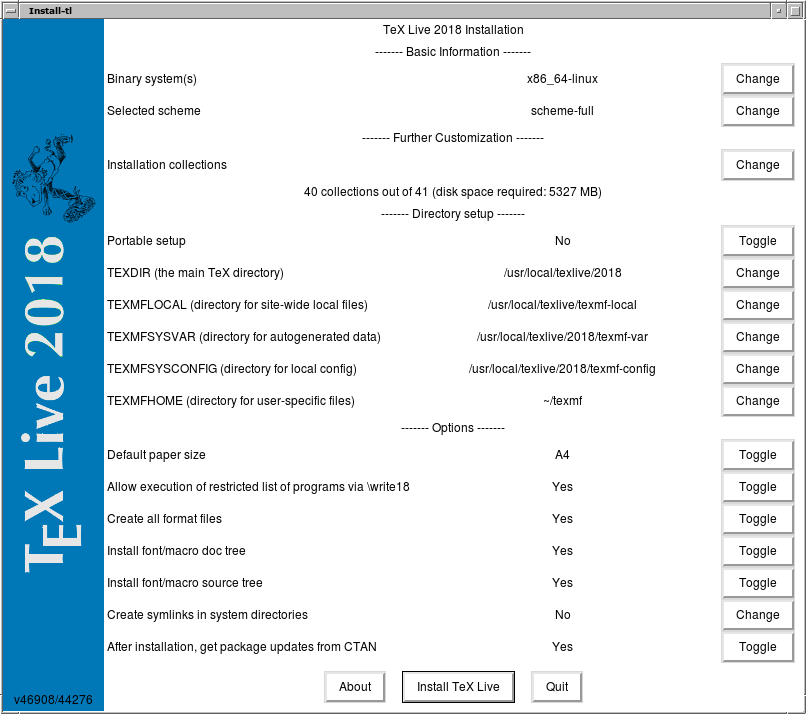
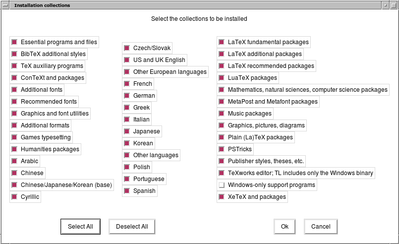

前言
- 想做ppt，但几次ppt演示时出现兼容问题，于是想尝试格式稳定的
beamer做ppt。 - 本机空间不足，
apt-get install命令无法指定安装路径，于是挂载了一个硬盘，手动下载后安装，空间充足可sudo apt install texlive-full texstudio一行命令解决。
texlive安装
- 进入准备安装路径，使用更快的清华大学镜像源下载
texlive安装包：
1 | $ cd /media/xsyin/extra |
- 单击挂载光盘，用浏览器打开主目录下的
index.html，找到tex Live安装指南，或阅读网络版TEX Live安装指南 。使用图形化安装，安装依赖：
1 | $ sudo apt install perl-tk |

Installation collections --> change 选择安装模块，去除一些用不着的语言Cyrillic 至Spanish ，选上US and UK English ：

TEXDIR -->change 修改为安装路径：/media/xsyin/extra/texlive2018 ，其余默认，开始安装。
- 配置环境变量，编辑
~/.bashrc， 添加：
1 | export PATH=$PATH:/media/xsyin/extra/texlive2018/bin/x86_64-linux |
source ~/.bashrc 启用配置。
- 管理你的安装
tlmgr，设置清华大学开源仓库并更新，已安装beamer：
1 | $ tlmgr option repository https://mirrors.tuna.tsinghua.edu.cn/CTAN/systems/texlive/tlnet |
也可以GUI 模式启动： tlmgr -gui
- 测试安装是否成功：
1 | $ tex --version |
texstudio安装
- texstudio 占用空间不大，使用
sudo apt install texstusio安装或在源码包下载页面 选择对应的安装包，依赖不满足使用sudo apt -f install安装。 texstudio打开，配置语言为中文.
beamer
- 快速上手一般采用现成的模板，在texstudio中新建，复制以下最小模板，构建并查看：
1 | %!TEX program = xelatex |
好了，现在可以开(ku) 心(bi)的写slide 了。